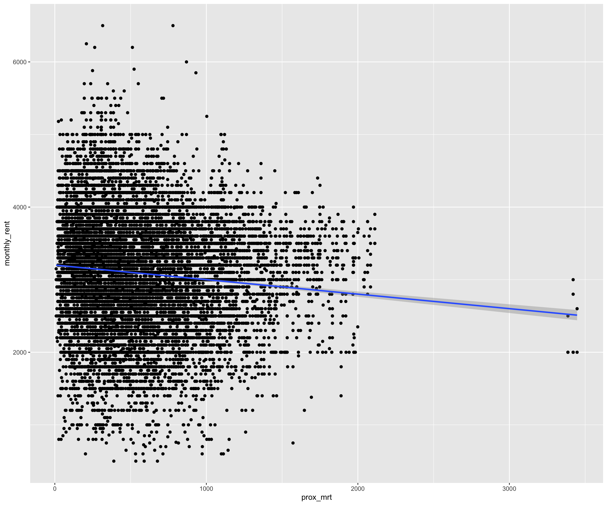
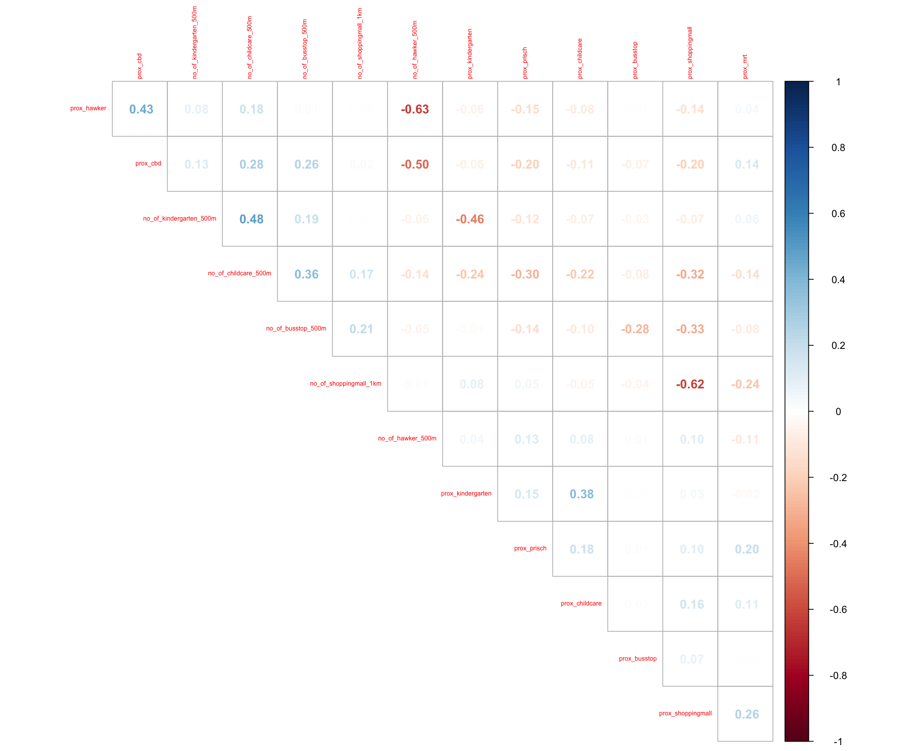
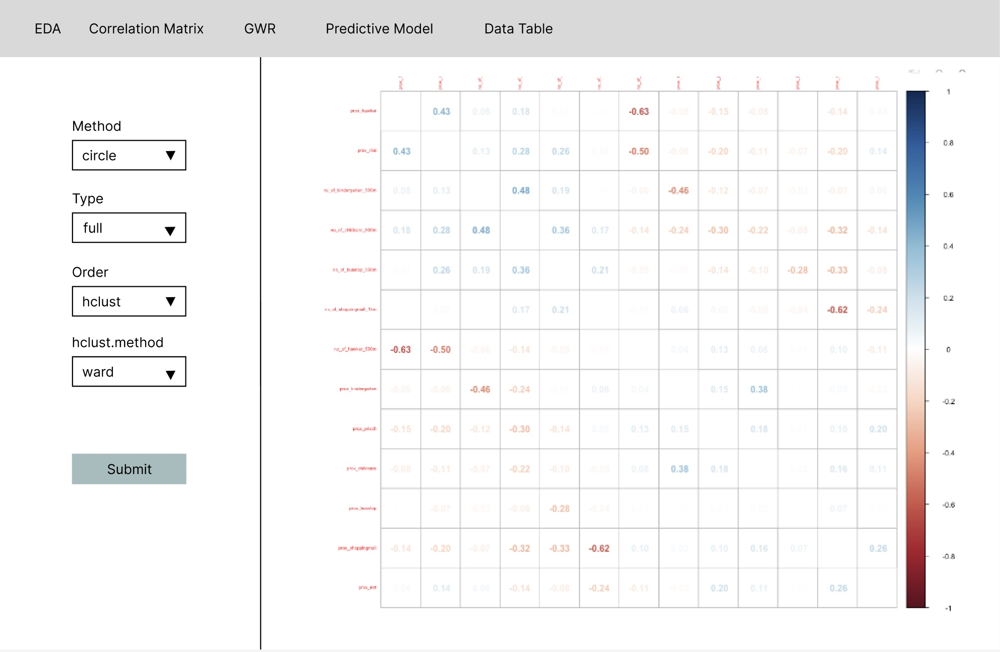

pacman::p_load(olsrr, corrplot, ggpubr, sf, spdep, GWmodel, tmap, tidyverse, gtsummary)Take Home Exercise 03: Prototyping Modules for Geospatial Analytics Shiny Application
1. Overview
In this take-home exercise, I will focus on prototyping Geographically Weighted Regression (GWR) models for my group’s Shiny App. GWR is a spatial statistical method that accounts for non-stationary variables (such as climate, demographics, and physical environment characteristics) and models the local relationships between these independent variables and the outcome of interest. In this case, the dependent variable is the resale price of HDB flats in Singapore, and I will examine how factors such as flat size, proximity to MRT and CBD, remaining lease, storey height, and more influence HDB resale prices.The data preparation and Exploratory Data Analysis were handled by my groupmate, so for this exercise, I will load the data directly from an RDS file.
2 The R-Packages
tidyverse: attribute data handling
3. The Data
3.1 Aspatial Data
First, import the resale dataset, as the data wrangling was done by teammate. Please refer to here for details.
resale.sf=> contains the resale data from Jan 2020 to Sept 2024, as well as other fields like:Dependent:
- Resale Price:
resale_price,price_per_sqft
- Resale Price:
Continuous:
Remaining Lease:
remaining_lease_total_monthsSize of flat:
floor_area_sqftDistance to transport:
distance_to_mrt_metersDistance to amenities:
distance_to_pri_school_metersDistance to central business district:
distance_to_cbd
Categorical:
Remaining Lease:
remaining_lease_periodStorey Height Group:
storey_range_groupedHousing Type:
housing_type
resale.sf <- read_rds("data/rds/resale_5yr_sf.rds")head(resale.sf)Simple feature collection with 6 features and 20 fields
Geometry type: POINT
Dimension: XY
Bounding box: xmin: 28911.05 ymin: 38571.11 xmax: 30705.05 ymax: 39607.85
Projected CRS: SVY21 / Singapore TM
# A tibble: 6 × 21
month storey_range resale_price floor_area_sqft price_per_sqft
<date> <chr> <dbl> <dbl> <dbl>
1 2020-01-01 04 TO 06 265000 786. 337.
2 2020-01-01 19 TO 21 470000 753. 624.
3 2020-01-01 01 TO 03 230000 786. 293.
4 2020-01-01 04 TO 06 280000 786. 356.
5 2020-01-01 07 TO 09 220000 732. 301.
6 2020-01-01 10 TO 12 280000 732. 383.
# ℹ 16 more variables: planning_area_ura <chr>, region_ura <chr>, x <dbl>,
# y <dbl>, closest_mrt_station <chr>, distance_to_mrt_meters <dbl>,
# transport_type <chr>, line_color <chr>, distance_to_cbd <dbl>,
# closest_pri_school <chr>, distance_to_pri_school_meters <dbl>,
# geometry <POINT [m]>, housing_type <chr>,
# remaining_lease_total_months <dbl>, remaining_lease_range <fct>,
# storey_range_grouped <chr>st_crs(resale.sf)Coordinate Reference System:
User input: EPSG:3414
wkt:
PROJCRS["SVY21 / Singapore TM",
BASEGEOGCRS["SVY21",
DATUM["SVY21",
ELLIPSOID["WGS 84",6378137,298.257223563,
LENGTHUNIT["metre",1]]],
PRIMEM["Greenwich",0,
ANGLEUNIT["degree",0.0174532925199433]],
ID["EPSG",4757]],
CONVERSION["Singapore Transverse Mercator",
METHOD["Transverse Mercator",
ID["EPSG",9807]],
PARAMETER["Latitude of natural origin",1.36666666666667,
ANGLEUNIT["degree",0.0174532925199433],
ID["EPSG",8801]],
PARAMETER["Longitude of natural origin",103.833333333333,
ANGLEUNIT["degree",0.0174532925199433],
ID["EPSG",8802]],
PARAMETER["Scale factor at natural origin",1,
SCALEUNIT["unity",1],
ID["EPSG",8805]],
PARAMETER["False easting",28001.642,
LENGTHUNIT["metre",1],
ID["EPSG",8806]],
PARAMETER["False northing",38744.572,
LENGTHUNIT["metre",1],
ID["EPSG",8807]]],
CS[Cartesian,2],
AXIS["northing (N)",north,
ORDER[1],
LENGTHUNIT["metre",1]],
AXIS["easting (E)",east,
ORDER[2],
LENGTHUNIT["metre",1]],
USAGE[
SCOPE["Cadastre, engineering survey, topographic mapping."],
AREA["Singapore - onshore and offshore."],
BBOX[1.13,103.59,1.47,104.07]],
ID["EPSG",3414]]Notice that our resale.sf was in EPSG 3414.
3.2 Geospatial Data
Using st_read() of sf package to import the MP14_SUBZONE_WEB_PL shapefile.
mpsz = st_read(dsn = "data/geospatial", layer = "MP14_SUBZONE_WEB_PL")Reading layer `MP14_SUBZONE_WEB_PL' from data source
`/Users/mingwei/Desktop/SMU/Y3S1/IS415/xXxPMWxXx/IS415-GAA/Take-home_Ex/Take-home_Ex03/data/geospatial'
using driver `ESRI Shapefile'
Simple feature collection with 323 features and 15 fields
Geometry type: MULTIPOLYGON
Dimension: XY
Bounding box: xmin: 2667.538 ymin: 15748.72 xmax: 56396.44 ymax: 50256.33
Projected CRS: SVY21As the aspatial data we going to use was in EPSG=3414, the code chunk below will transform mpsz object to ESPG code = 3414 using st_transform() method of sf package.
mpsz_svy21 <- st_transform(mpsz, 3414)st_crs(mpsz_svy21)Coordinate Reference System:
User input: EPSG:3414
wkt:
PROJCRS["SVY21 / Singapore TM",
BASEGEOGCRS["SVY21",
DATUM["SVY21",
ELLIPSOID["WGS 84",6378137,298.257223563,
LENGTHUNIT["metre",1]]],
PRIMEM["Greenwich",0,
ANGLEUNIT["degree",0.0174532925199433]],
ID["EPSG",4757]],
CONVERSION["Singapore Transverse Mercator",
METHOD["Transverse Mercator",
ID["EPSG",9807]],
PARAMETER["Latitude of natural origin",1.36666666666667,
ANGLEUNIT["degree",0.0174532925199433],
ID["EPSG",8801]],
PARAMETER["Longitude of natural origin",103.833333333333,
ANGLEUNIT["degree",0.0174532925199433],
ID["EPSG",8802]],
PARAMETER["Scale factor at natural origin",1,
SCALEUNIT["unity",1],
ID["EPSG",8805]],
PARAMETER["False easting",28001.642,
LENGTHUNIT["metre",1],
ID["EPSG",8806]],
PARAMETER["False northing",38744.572,
LENGTHUNIT["metre",1],
ID["EPSG",8807]]],
CS[Cartesian,2],
AXIS["northing (N)",north,
ORDER[1],
LENGTHUNIT["metre",1]],
AXIS["easting (E)",east,
ORDER[2],
LENGTHUNIT["metre",1]],
USAGE[
SCOPE["Cadastre, engineering survey, topographic mapping."],
AREA["Singapore - onshore and offshore."],
BBOX[1.13,103.59,1.47,104.07]],
ID["EPSG",3414]]Notice that the EPSG is now in 3414, same as resale.sf. We are good to go.
4. Hedonic Pricing Modelling
4.1 Simple Linear Regression Method
To start off, lest build a simple linear regression model by using resale_price as the dependent variable and floor_area_sqft as the independent variable.
Note
I will try out simple linear regression, but I won’t dive deeply into it, as this method will not be part of our Shiny App. Instead, I will focus more on multiple linear regression and building Hedonic Pricing Models using the GWmodel package in the next section. Which I will explore the different arguments available so that we can include them in our Shiny App.
hdb.slr <- lm(formula=resale_price ~ floor_area_sqft, data = resale.sf)lm() returns an object of class “lm” or for multiple responses of class c(“mlm”, “lm”).
The functions summary() and anova() can be used to obtain and print a summary and analysis of variance table of the results. The generic accessor functions coefficients, effects, fitted.values and residuals extract various useful features of the value returned by lm.
summary(hdb.slr)
Call:
lm(formula = resale_price ~ floor_area_sqft, data = resale.sf)
Residuals:
Min 1Q Median 3Q Max
-394987 -87668 -26780 55020 980977
Coefficients:
Estimate Std. Error t value Pr(>|t|)
(Intercept) 94483.917 1628.497 58.02 <2e-16 ***
floor_area_sqft 425.147 1.519 279.95 <2e-16 ***
---
Signif. codes: 0 '***' 0.001 '**' 0.01 '*' 0.05 '.' 0.1 ' ' 1
Residual standard error: 139000 on 126466 degrees of freedom
Multiple R-squared: 0.3826, Adjusted R-squared: 0.3826
F-statistic: 7.837e+04 on 1 and 126466 DF, p-value: < 2.2e-16The output report reveals that the resale_price can be explained by using the formula:
resale_price = 94483.917 + 425.147(floor_area_sqft)
The coefficients section, the p-value for the hypothesis test that the coefficient is equal to zero. Since both values are less than 0.001, both the intercept and the floor area are statistically significant
With the multiple R-squared of 0.3826, Indicates that about 38.26% of the variability in resale prices is explained by the model. This suggests that other factors likely influence resale prices, as over 60% of the variability remains unexplained.
Since p-value is much smaller than 0.0001, we will reject the null hypothesis that mean is a good estimator of resale_price. This will allow us to infer that simple linear regression model above is a good estimator of resale_price.
To visualise the best fit curve on a scatterplot, we can incorporate lm() as a method function in ggplot’s geometry as shown in the code chunk below.
Click to expand/collapse code
ggplot(data=resale.sf,
aes(x=`floor_area_sqft`, y=`resale_price`)) +
geom_point() +
geom_smooth(method = lm)
4.2 Multiple Linear Regression
4.2.1 Visualising the Relationships of the Independent Variables
Before constructing a multiple regression model, it’s crucial to verify that the independent variables are not highly correlated with one another. Using highly correlated independent variables by mistake can undermine the model’s quality. This issue is referred to as multicollinearity in statistics.
A correlation matrix is often utilized to visualize the relationships among independent variables. In addition to R’s pairs() function, there are several packages available that facilitate the display of a correlation matrix. In this section, we will use the corrplot package.
First, lets check the column for the resale.sf.
names(resale.sf) [1] "month" "storey_range"
[3] "resale_price" "floor_area_sqft"
[5] "price_per_sqft" "planning_area_ura"
[7] "region_ura" "x"
[9] "y" "closest_mrt_station"
[11] "distance_to_mrt_meters" "transport_type"
[13] "line_color" "distance_to_cbd"
[15] "closest_pri_school" "distance_to_pri_school_meters"
[17] "geometry" "housing_type"
[19] "remaining_lease_total_months" "remaining_lease_range"
[21] "storey_range_grouped" The code chunk below is used to plot a scatterplot matrix of the relationship between the independent variables in resale.sf data.frame.
selected_columns <- resale.sf %>% select(floor_area_sqft, distance_to_mrt_meters, distance_to_cbd,distance_to_pri_school_meters,remaining_lease_total_months) %>%
st_drop_geometry()corrplot(cor(selected_columns), diag = FALSE, order = "AOE",
tl.pos = "td", tl.cex = 0.5, method = "number", type = "upper")
After checking the documentation for corrplot packages. There are different input/option for the arguments such as:
methodcircle (default)
square
ellipse
number
pie
shade
color
typefull (default)
upper
lower
orderoriginal (default) => orginal order
AOE => angular order of the eigenvectors
FPC => first principal component order
hclust => for the hierarchical clustering order
hclust.method: when the order is hclust, the below method can be define- ‘ward’ , ward.D’, ‘ward.D2’, ‘single’, ‘complete’, ‘average’, ‘mcquitty’, ‘median’ or ‘centroid’
alphabet => alphabetical order
The arguments mentioned above can be user inputs in our Shiny App, allowing users to interactively explore the relationships among the independent variables.
